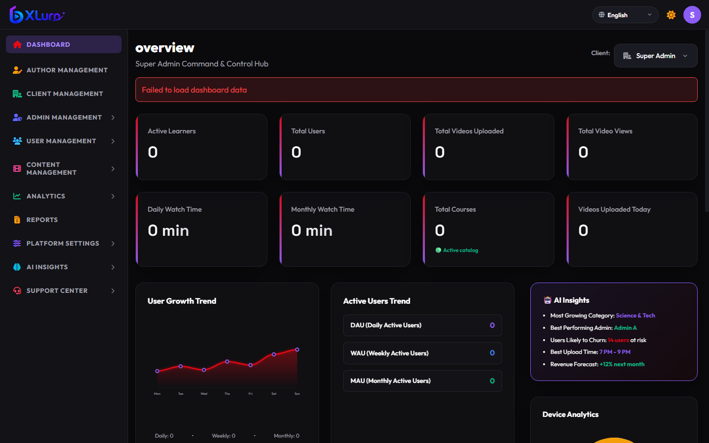
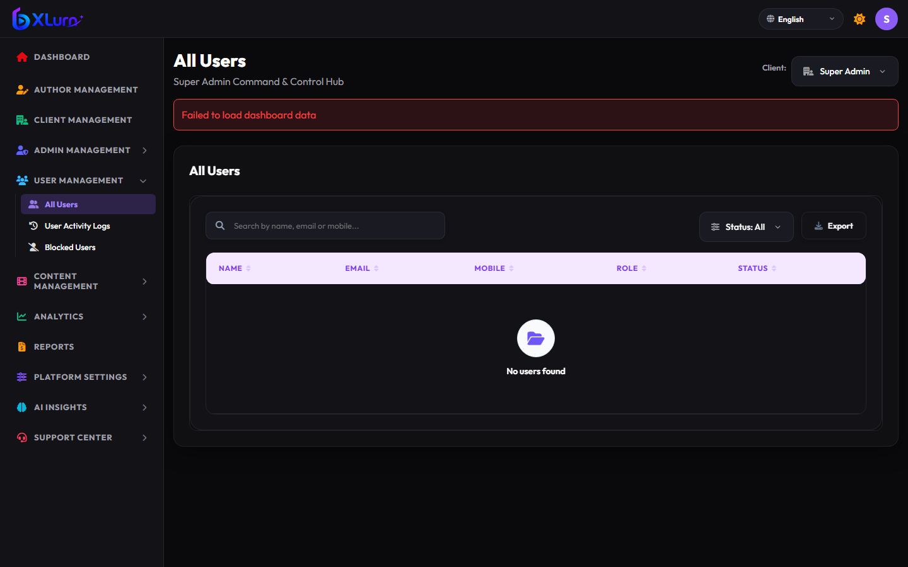
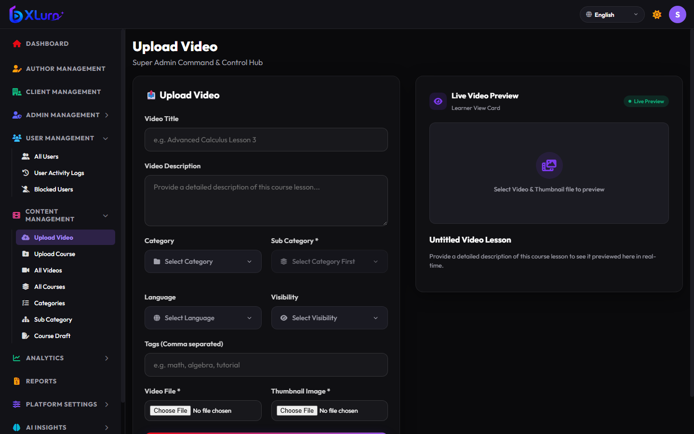
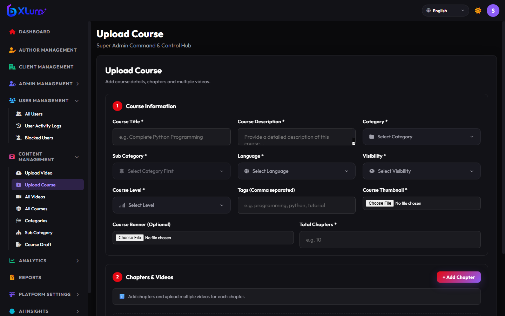
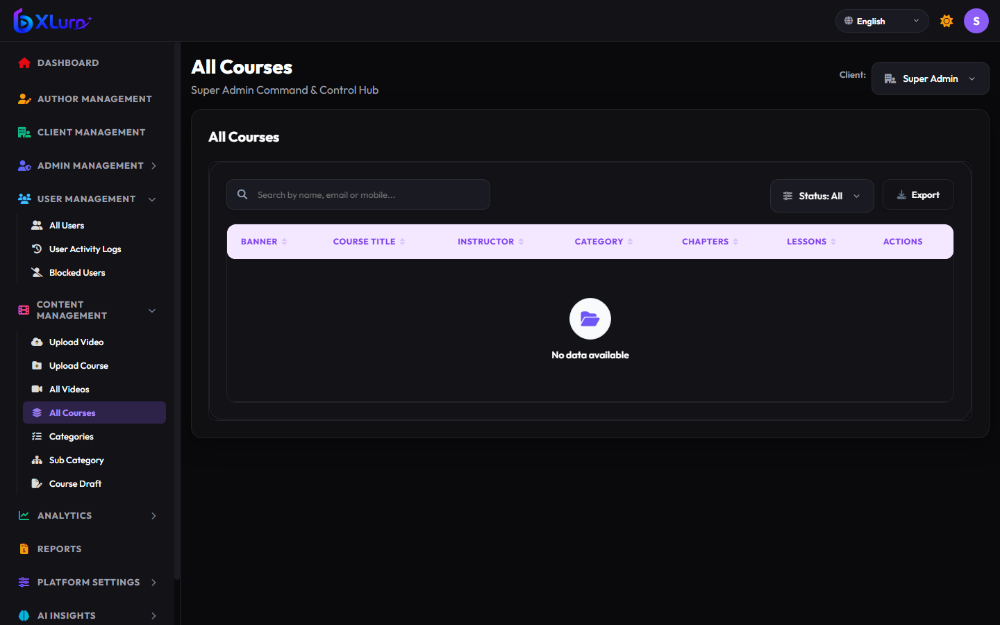
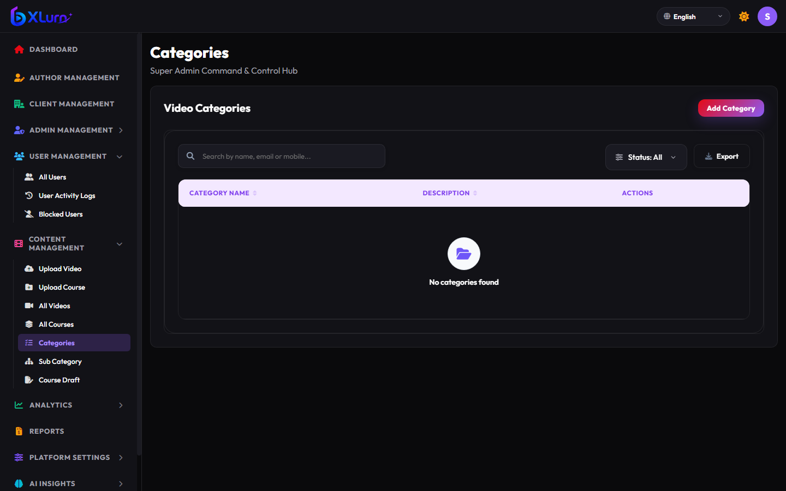
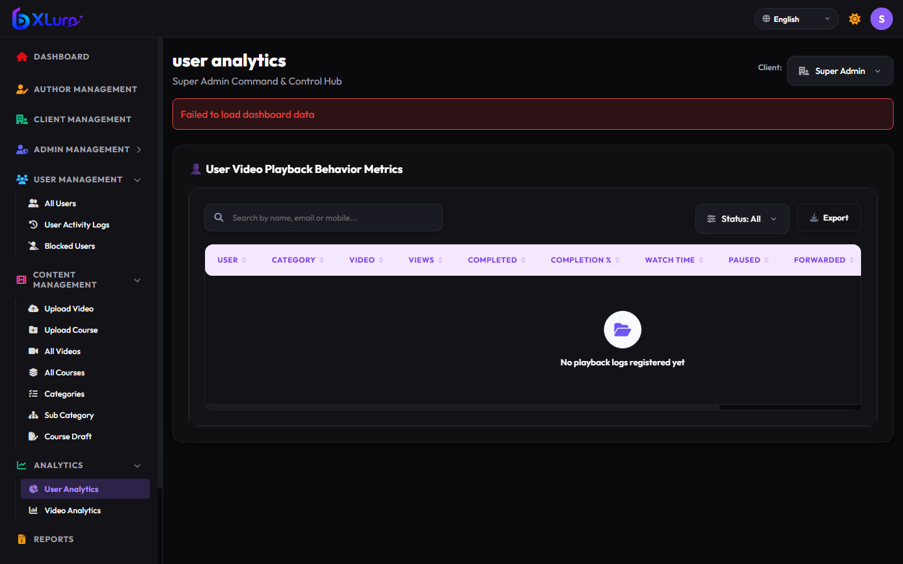
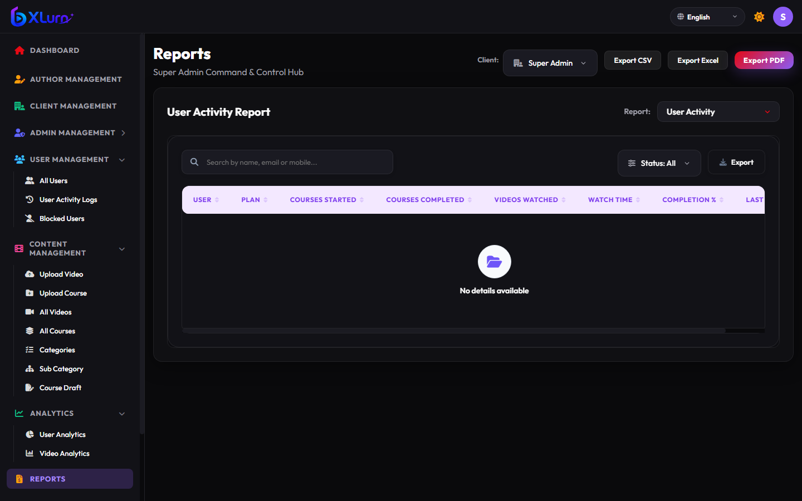
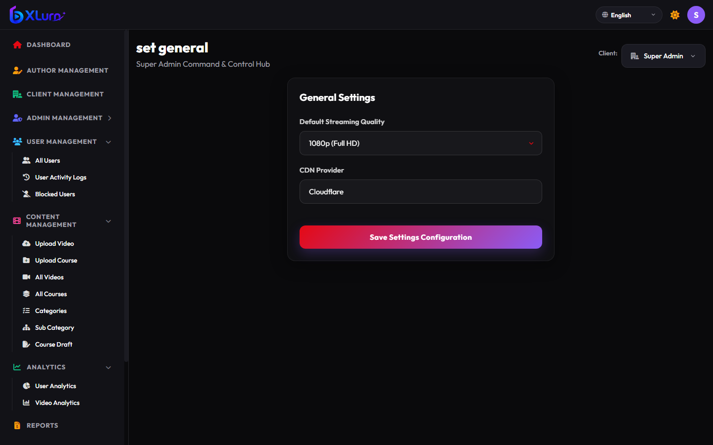
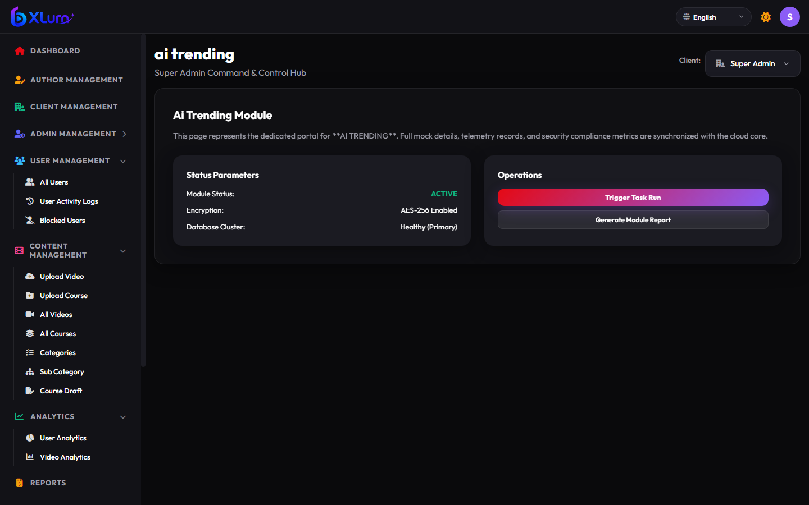

XLurn Enterprise Video Streaming Platform
Admin Portal Operations Manual & User Guide
📖 Table of Contents
- 1. System Overview & Architecture
- 2. Authentication & Session Security
- 3. Dashboard Command Center
- 4. Author & Instructor Management
- 5. User Management & Security
- 6. Single Video Publishing
- 7. Comprehensive Course Builder
- 8. Catalog & Categories
- 9. Telemetry & Analytics Hub
- 10. Reports Generation & Export
- 11. Platform Settings & Languages
- 12. AI Predictive Insights
1. System Overview & Architecture
The XLurn Admin Portal provides unified administrative control over the enterprise video streaming and course authoring ecosystem. The platform supports tiered role administration with clear boundary separations between Super Admins and Author Admins.
| Role | Access Level | Key Capabilities |
|---|---|---|
| Super Admin | Global | Platform configuration, author accounts, user directories, global catalog, billing, and system logs. |
| Author Admin | Scoped | Video uploads, multi-chapter course authoring, student engagement monitoring, and curriculum management. |
2. Authentication & Session Security
The system enforces role-based authorization, RC4-encrypted credentials, and automated session timeouts.

3. Dashboard Command Center
High-level mission control displaying real-time platform telemetry, active video counts, enrolled learners, and resource consumption.

5. User Management & Security
Manage registered learners, audit login histories, and isolate compromised or suspended accounts.

6. Single Video Publishing
Publish standalone video lessons with resumable chunked uploading, live card preview, and automated Whisper AI speech-to-text subtitles.

7. Comprehensive Course Builder
Create rich, multi-chapter curricula with modular chapters, ordered video lessons, and downloadable supplemental files (PDFs, ZIPs, slides).

8. Catalog & Categories
Organize courses and standalone videos into structured categories and subcategories.


9. Telemetry & Analytics Hub
Track student engagement, watch duration, completion ratios, and playback drop-off metrics.

10. Reports Generation & Export
Extract operational data in one click to CSV, Excel (.xlsx), or PDF format.

11. Platform Settings & Languages
Configure streaming resolution profiles, CDN distribution, and multilingual support.

12. AI Predictive Insights
Utilize machine learning models for churn prediction, trending topics detection, and optimal upload scheduling.
